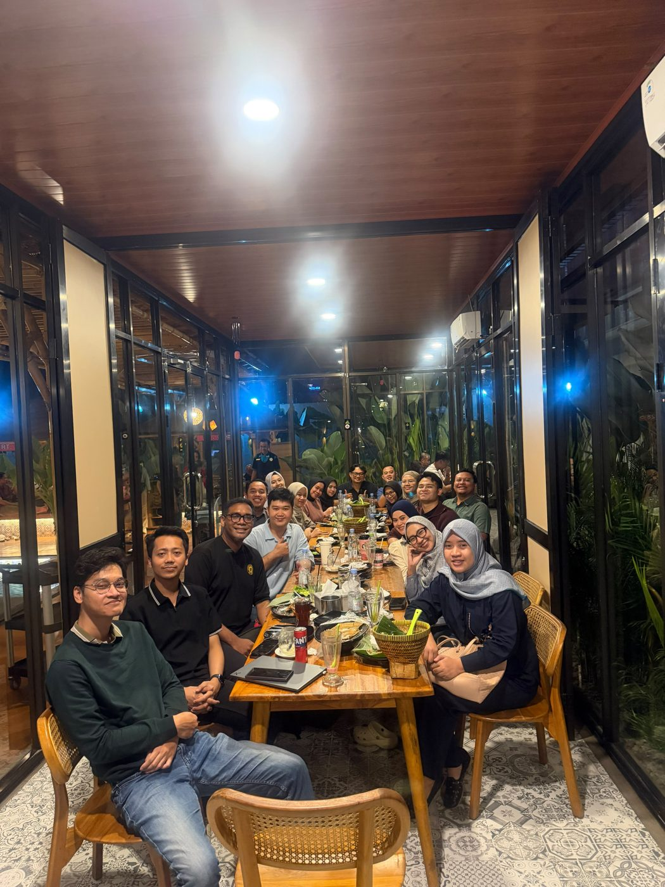
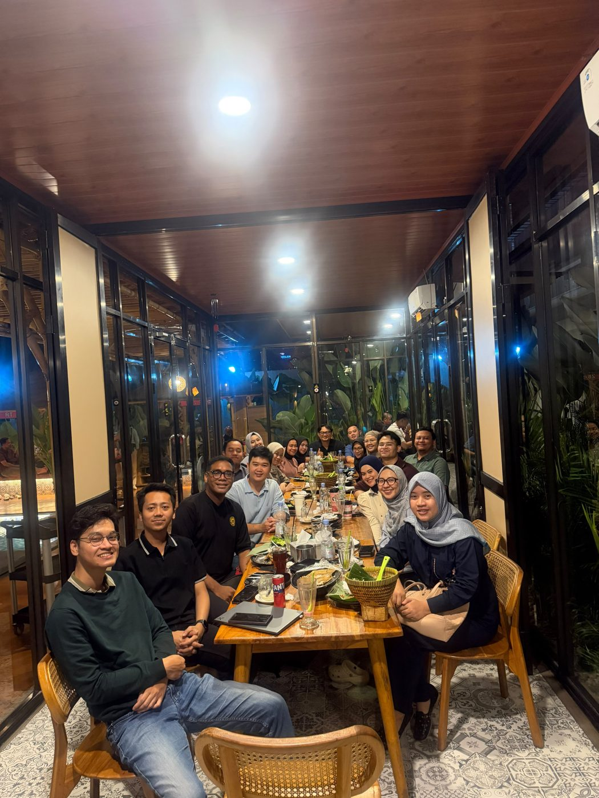
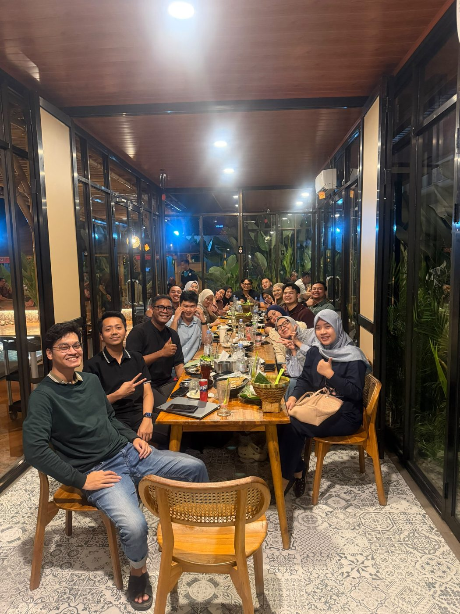
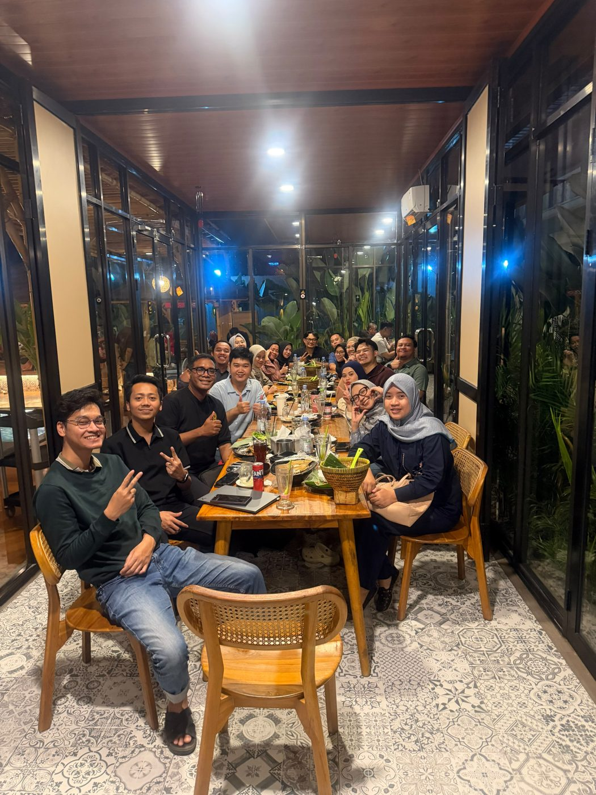
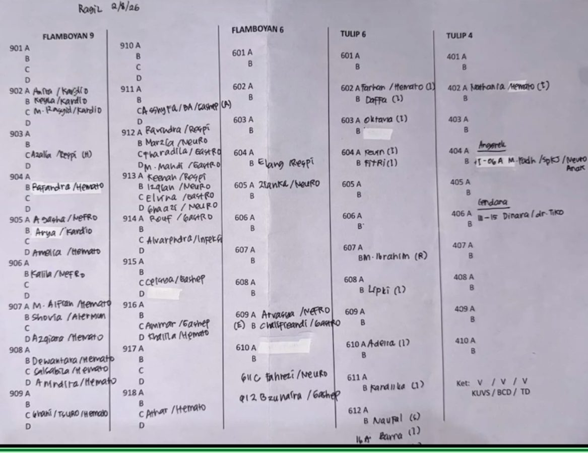
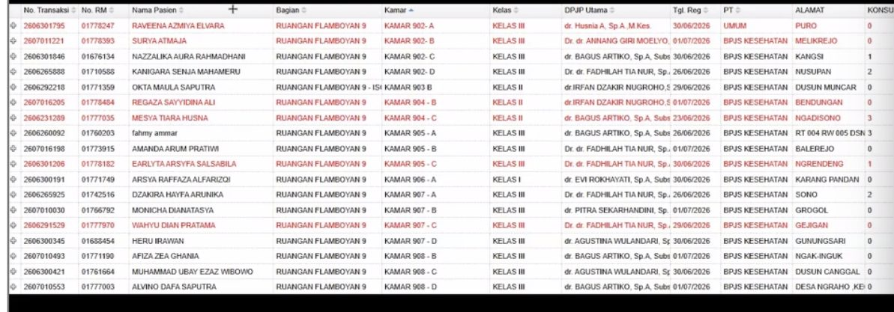
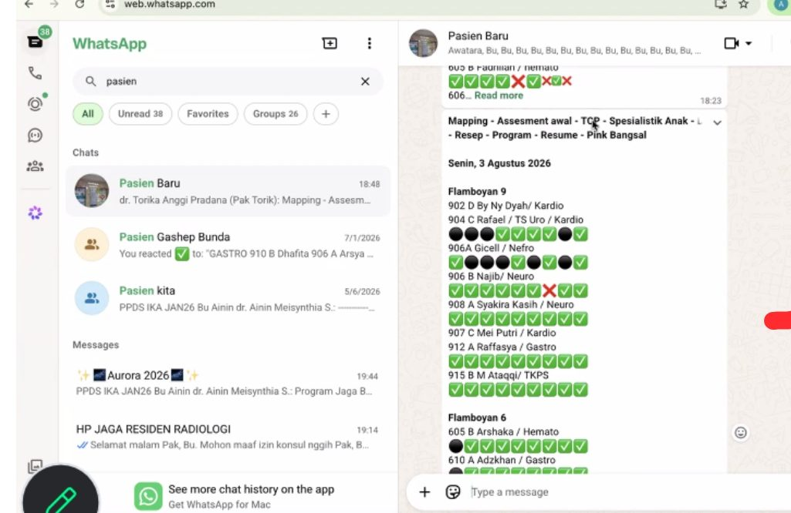

BioData Anggota — Angkatan Pak Hilal
Perlengkapan Wajib Residen Junior (KUVS)
Sabtu, 18 Juli 2026
- Siapkan 2–3 nama panggilan cadangan, tidak boleh sama dengan angkatan di atas maupun beberapa alumni.
- Gunakan 2 suku kata dari 1 kata nama (bukan gabungan nama depan+belakang, bukan singkatan).
- Tidak boleh sama/menyerupai pelafalan nama senior, dan tidak boleh mengandung makna/konotasi lain.
- Tanda koma (,) dipakai jika kata setelahnya diawali huruf besar; "Pak/Bu" ditulis kapital di awal.
- Ucapan "Terima kasih" saja (bukan "terima kasih banyak"), dan bukan "Terimakasih".
- Junior tidak boleh me-reply pesan senior.
- Jika 1 orang memberi arahan → jawab sesuai gender orang itu saja ("Baik, Pak" / "Baik, Bu"), bukan "Pak, Bu" sekaligus.
- Setiap membalas arahan senior, akhiri dengan "Mohon arahan dan bimbingannya selalu" sesuai konteks.
- Jika ada kekeliruan: residen yang salah minta maaf duluan, lalu diikuti seangkatan dengan kalimat "kami".
- Jika sudah mohon izin untuk mengirimkan sesuatu, sebaiknya segera dikirimkan. Jika masih butuh waktu, jawab dulu dengan "Mohon izin untuk kami koordinasikan".
- Yang merespon di grup tidak harus chief — bisa bergantian semuanya, sebagai latihan tata cara komunikasi selama residensi.
- Tidak perlu ada spasi sebelum tanda titik (contoh: "selesai." bukan "selesai .").
- Junior tidak boleh menggunakan tanda tanya (?) maupun tanda seru (!) kepada angkatan di atasnya.
- Sesuaikan salam dengan waktu kirim pesan: "Selamat Pagi/Siang/Sore/Malam" — diseragamkan satu angkatan.
- Junior tidak boleh me-reply pesan senior; dari senior ke junior tidak ada larangan. Balasan cukup "Baik" atau "Nggih" saja.
- Wajib memiliki nomor darurat masing-masing teman (boleh via sosmed, yang penting terhubung).
- Disarankan pakai nomor Telkomsel (sinyal paling baik selama di RS).
- Selama residensi, setting WhatsApp diubah agar nama lengkap, foto profil, last seen, dan status terlihat.
- Nama WhatsApp diganti ke nama lengkap (boleh disingkat bila terlalu panjang).
- Background merah, posisi presisi memakai snelli, wajib dikancing & rapi.
- Baju dalam kemeja putih; laki-laki pakai dasi hitam, kerah dikancing, rambut/kumis/jenggot rapi.
- Perempuan: kemeja putih terlihat, jilbab rapi & dimasukkan ke snelli. Jika tidak berkerudung, telinga harus terlihat.
- Tidak boleh pakai kontak lensa, makeup berlebihan, atau kacamata.
- Sebaiknya foto tidak memakai AI; jika terpaksa, dibuat sehalus mungkin agar tidak terlihat (akan dilihat SPV).
- Cara kirim foto: caption dan foto dikirim bersamaan (tidak dipisah).
| Chief | Pak Hilal |
| Sekretaris | Bu Mega |
| Bendahara | Bu Tasya, Bu Ara |
| IRT | Pak Rifqi, Bu Finan |
| IT | Pak Hafidz |
| Ilmiah | Pak Jojo, Bu Erina |
| Entertain | Bu Syeli |
Minggu, 19 Juli 2026
- Jika yang mengawali/memberi arahan hanya satu orang, sapaan jawaban cukup sesuai gender orang itu (tidak perlu "Pak, Bu").
- Jika Bapak yang salah, mulai dengan "mohon maaf atas kekeliruan/keterlambatan/kesalahan saya", baru diikuti teman seangkatan dengan "kami".
- Simpan nomor masing-masing sesuai format contoh, dilengkapi foto.
Selasa, 21 Juli 2026 — Zoom bersama Angkatan Pak Abi
- Pertemuan orang tua/wali: 28 Juli 2026, pukul 11.00 — bahas tingkatan junior/madya/senior.
- Pertemuan dengan angkatan Pak Abi: Minggu, 26 Juli 2026, pukul 16.00 (datang 15.30).
- Alternatif tempat & menu makanan harus sudah ditentukan paling lambat Jumat, 24 Juli 2026.
- Di grup, semua boleh menjawab (tidak harus chief) — chief menjawab hanya saat namanya di-tag.
- Saat perkenalan, hobi sebaiknya yang "menjual".
- Selama menjadi super junior: tidak boleh post status WA.
- Selama orientasi: tidak boleh post foto orientasi.
- Selama pradik: boleh post kegiatan pradik.
- Rencana beli sepatu: foto dulu, kirim ke grup, tunggu keputusan senior.
- Saat pertemuan orang tua, usahakan baju antar residen tidak sama (selain warna tidak boleh mencolok).
- Disarankan warna hitam, dibawa ke mana-mana.
- Isi wajib difoto dan dikirim contoh ke grup.
- Isi minimal: NGT, OGT, timbangan gantung, obat emergency.
- Sehabis pertemuan orang tua, langsung masuk (lanjut kegiatan/stase).
- Nomor HP yang bermasalah lebih baik diselesaikan sekarang, sebelum menghubungi senior dan SPV.
- Untuk menjahit baju: lebih cepat lebih baik, jangan menunda.
- Kita harus mengikuti aturan yang ada — saling menghormati satu sama lain.
Jumat, 24 Juli 2026
- Belajar perkenalan dilaksanakan Sabtu, 25 Juli 2026 — menunggu buku angkatan (10 orang) lengkap.
- Buku angkatan berisi kisi-kisi seleksi tes PPDS, segera diselesaikan, sampul bernama angkatan "AMARANTH".
- Muhammad Hilal H.
- Adelia H. Tiara
- Erina Thursina R.
- Finanda Nisa A.
- Megayani Santoso
- Joko Herdianto
- Hafiidz Fatich R.
- Mochamad Rifqie N.K
- Syeli Santriawati
- Tasya Firzannisa M.P
- Tidak boleh menggunakan tanda tanya (?) saat bertanya ke senior — diganti "NGGIH".
- Tidak boleh capslock di grup senior / chat SPV, kecuali diperlukan.
- Hanya boleh 1 nomor per orang dalam satu grup (berlaku juga jika satu grup dengan senior). Dua nomor hanya boleh untuk grup internal angkatan.
- Senior/konsulen/staff hanya menyimpan 1 nomor kita — tanyakan dulu sebelum bertindak (mis. invite nomor kedua) sebelum melakukannya.
- Solo Bistro — Lokasi: maps.app.goo.gl/nMPVWwrUH6GP1VyH9 · Menu: fliphtml5.com/naesk/guim
- Kampung Kecil — Lokasi: share.google/wwJkAiBoL8vbk0Tpi · Menu: scribd.com/Menu-Kampung-Kecil
- Grandis Barn — Lokasi: share.google/GkRCaSIZUcOZ7Ihln · Menu: fliphtml5.com/grandisbarn
- Saung Bandung Garden Resto — Lokasi: maps.app.goo.gl/FEwsUWY37mTGjxaVA · Menu: drive.google.com (Menu)
- Diawali chief angkatan, disusul anggota sesuai abjad, masing-masing < 1 menit, disertai foto profil, ditutup oleh chief jika sudah lengkap.
- Perkenalan urut dari Chief lalu urut absen (duduk juga diurutkan). Format sama seperti biasa + tambahan "ditemani oleh orangtua/wali/suami/istri, bapak xx, ibu xx" — wali ikut berdiri saat namanya disebut.
- Tidak menyertakan hobi dan alamat email.
- Laporan kegiatan pradik dikirim setiap hari jam 16.00–17.00 ke grup angkatan & grup dengan The Chief.
- Format izin orientasi dikirim H-1 ke senior paling bawah di stase tujuan, jam 16.00–17.00.
Pertemuan, 26 Juli 2026
- Dihadiri KPS, KSM, kepala bagian anak, staff/SPV, supporting staff — tidak semua prodi mengadakan ini.
- Dilaksanakan sebelum pradik karena jarak pengumuman–pradik jauh.
- Yang belum menikah didampingi orang tua; yang sudah menikah didampingi suami/istri & orang tua.
- Wejangan dari Prof Harsono, Dr. Ganung, KSM, KPS, kepala bagian anak — dijelaskan alur prodi anak (stase junior/madya/senior sesuai tupoksi).
- Prodi anak 3,5 tahun — sulit dapat lebaran selama 3–4 tahun ke depan.
- Duduk sesuai abjad, chief paling kiri.
- Isi perkenalan menyesuaikan pertanyaan SPV; jika tidak ada arahan, ikuti format IR biasa.
- Sertakan nama orang tua/suami/istri saat perkenalan.
- Catat semua IR dan arahan yang diberikan.
- Jika senior menyuruh hal yang belum diajarkan, tanyakan ke senior 1 tingkat di atas — jangan langsung ke yang lebih atas.
- Chief mengakui perannya sebagai chief di hadapan forum.
- Sebisa mungkin ikuti aturan yang ada; jika luput/salah tanpa disengaja, catatan itu bisa terbawa sampai akhir — jadi tetap perlu hati-hati.
- Saling menjaga antara 1 angkatan dan angkatan di atasnya.
- Jika sudah diundang ke grup baru, langsung ucapkan terima kasih masuk grup; perkenalan dilakukan setelah dipersilakan.
- Prodi anak: senior menyuruh sesuai aturan yang berlaku — sangat fair.
- Jam pulang → langsung pulang, tidak boleh ditunda-tunda.
- Jika ada urusan/keperluan, kabari teman seangkatan (agar siap jika ditanya senior).
- Jika pulang: kabarkan tujuan, jam berangkat, kendaraan, dan dengan siapa.
- H-1 jam 16.00–17.00 wajib chat izin ikut orientasi ke senior paling bawah (angkatan Pak Abi / Pak Jerman).
- Setiap pindah stase, matur juga ke angkatan senior paling bawah.
- Rabu orientasi: datang 06.30, briefing wajib 07.30.
- Visite bersama senior: langsung izin. Visite bersama SPV: izin dulu ke senior di situ.
- Wajib mencatat apa yang diajarkan senior lalu mengajarkannya ke teman seangkatan (agar siap saat pindah stase).
- Orientasi berlangsung 3 bulan (3x ganti stase); fokus interaksi ke pasien, bukan meracik obat. Mulai November dilepas sendiri.
- Kantong snelli atas: palu refleks, pulpen, penlight
- Kantong snelli kanan: termometer tembak, termometer ketek, pulse oxymetri
- Kantong snelli kiri: pita lila, medline, timbangan
- Kalung: stetoskop
- Setiap sesi jaga, bawa pin IDAI merah-kuning-hijau-biru (untuk diberikan bila diminta senior).
- Batik, foto merah, pengrajin — untuk arisan IDAI / menyambut tamu.
- Perempuan: model bebas, tidak boleh gamis. Laki-laki: lengan panjang.
- Rotasi baju residen: batik, polo putih IDAI, hitam pediatric, hijau pediatric, rompi TKPS.
- Buku angkatan harus selesai sebelum pradik.
- Datang 30 menit sebelum jadwal pradik; jadwal dikirim ke grup angkatan atas & grup The Chief jam 16.00–17.00 (tidak harus chief yang kirim).
- Dibuktikan dengan foto klinis — usahakan posisi kanan depan prodi anak, foto dulu baru duduk sesuai aturan (default: wajib duduk kanan depan). Foto dikirim ke grup Abyalis.
- Buat notulensi pradik; buat folder Google Docs pradik lalu dibagikan (share).
- Usahakan minta materi ke senior sebelum ditanya; belajar ilmiah/OSCE bersama, saling mengingatkan.
- Buku telepon SPV: catat alamat & nomor telepon (update jika pindah/ganti).
- Pengayaan: jam 07.00–15.00, datang 06.30. Jika terjadwal jaga → langsung jaga. Pulang tepat waktu; jika mau berkumpul, lapor ke grup dengan Pak Abi.
Tugas — Journal Reading
- Setelah pengayaan, ada kocokan pembimbing Jurnal Reading 1 (podium) dan Jurnal Reading 2 (non-podium), serta bahasan jurnal (diagnostik, terapi, dll) — dikoordinasikan bersama Mbak Tyas.
- Cari 5 jurnal sesuai subspesialis sesuai hasil kocokan.
- Ajukan judul ke Mas Joko (konfirmasi judul belum pernah dipakai).
- Sebelum mengajukan ke SPV, tanya dulu ke grup Abyalis — siapa yang sudah pernah maju jurding dengan SPV tersebut.
- Ajukan ke SPV minimal 5 judul.
- Tanda tangan lembar ACC dan monitoring.
- Email lembar ACC ke ilmiahppdsika2@gmail.com, lalu konfirmasi ke Mas Joko.
- Tergantung pembimbing — mau dikonsul dulu atau langsung maju jurnal.
- Jurnal Reading 1 dan SKY sudah terjadwal — siap tidak siap harus tetap maju.
- Jurnal Reading 2 lebih baik direncanakan sendiri oleh masing-masing PPDS.
- Jadwal maju jurnal dikoordinasikan COA (Bu Uli) — jurding podium ditonton residen lain; jurding non-podium hanya presentasi ke SPV saja.
- Buat PPT, konsul ke senior (pin biru) sesuai stase yang sedang dijalani.
- Jika senior di stase yang sama sedang sibuk, baru boleh konsul ke senior stase lain.
- Konsul senior sebaiknya langsung; jika senior stase lain yang dituju sedang sibuk, hubungi via WA dulu sebelum konsul langsung.
Tugas — SKY (Studi Kasus Junior)
- Kocokan SPV SKY dikoordinasikan bersama Mbak Tyas.
- Hubungi Senior/Madya yang sedang stase di SPV hasil kocokan.
- Boleh tanya senior/madya stase tersebut setiap bulan.
- SPV biasanya menyukai kasus penegakan diagnosis.
- Jika sudah dapat kasus, minta TTD ACC dan monitoring kasus.
- Laporkan ke COA tentang kasus SKY yang didapat.
- Isi link G-Form disertai lembar ACC kasus.
- Buat makalah (sudah ada formatnya) dan PPT.
- Tinjauan pustaka (teori) dibandingkan dengan kasus yang didapat.
- Konsul ke senior stase terkait, maksimal 10 hari sebelum maju SKY.
- Konsultasi berkala dengan SPV.
- Cek Turnitin ke Mbak Beta (lebih cepat); jika sudah ACC, minta TTD dr. Hari — similarity minimal 20% khusus bagian analisis kasus.
- Jadwal maju ditentukan COA (diumumkan di papan/dinding hijau) — dapat berubah sewaktu-waktu, jadi begitu ACC kasus keluar segera buat makalah & PPT agar siap maju sesuai jadwal.
H-3: WA ke penguji, pembimbing, dan moderator — kirim link Zoom (didapat dari Mas Joko).
H-1: WA mengingatkan penguji, pembimbing, dan moderator; jam 16.00–17.00 kirim link Zoom ke grup prodi.
Setelah maju, tinggal menunggu nilai, revisi, atau tugas tambahan.
Tugas — CC (Case Conference)
- Jadwal jaga dibuat COA di awal bulan, dapat berubah sewaktu-waktu.
- Jaga bawah paling sering absen adalah jaga 9 dan 10.
Selasa CC → harusnya yang jaga Senin malam; jika tidak ada pasien, yang maju CC jaga Sabtu pagi.
Rabu CC → harusnya yang jaga Selasa malam; jika tidak ada pasien, yang maju CC jaga Sabtu malam.
Kamis CC → harusnya yang jaga Rabu malam; jika tidak ada pasien, yang maju CC jaga Ahad pagi.
SPV jaga Ahad kadang minta yang maju CC Ahad pagi jika jaga Ahad malam tidak ada pasien.
- Jaga NICU/PICU libur itu 24 jam.
- CC harus konsul ke senior setiap angkatannya.
Baris berikutnya: nama jaga PICU (kiri junior, kanan lebih senior) → nama jaga NICU (kiri junior, kanan lebih senior) → paling bawah: nama SPV on call.
- Neonatus tidak memakai PAT.
- Data diambil dari jaga 2 dan 3; jika tidak ada, cari lewat ERM.
- PAT wajib ada pada setiap pasien pediatrik. Jika data pasien banyak, boleh dibuat 2–3 slide.
- Partus dalam (lahir di RSDM, baik normal maupun SC): laporan minta ke jaga NICU, minta SOAP-nya untuk mengisi CC.
- Setiap kasus dibuat penjabarannya (tinggal copy-paste).
- Harus bisa plotting kurva WHO.
- Kurva Fenton — untuk bayi baru lahir & kehamilan aterm.
- Kurva CDC — untuk pediatri di atas 5 tahun; kurva WHO untuk usia 0–5 tahun.
- Waterlow — berdasarkan BB sekarang & BB ideal (cari tinggi ideal dulu).
- IMT — biasanya untuk pasien obesitas/overweight.
- Kurva Down Syndrome — untuk pasien dengan Down Syndrome.
- Perawakan pendek — di bawah P5, dicari TPG (Tinggi Potensi Genetik).
- Kurva bayi baru lahir — untuk kasus partus atau IGD pasien bayi baru lahir.
- Kurva Nellhaus — untuk mengecek lingkar kepala.
- Hasil lab dan hasil radiologi wajib dimasukkan.
- Rawat jalan juga tetap dibuatkan kurva dan materinya.
- Pasien meninggal cukup dibuat SOAP terakhir saja, tidak perlu dibuat kurva.
- ERM nanti punya akses masing-masing, akan diajarkan saat pradik.
- Saat pengayaan dan orientasi, boleh bertanya sampai benar-benar paham sebelum masa orientasi selesai.
- Bulan November sudah bisa dilepas mandiri.
- Konfirmasi jaga dilakukan H-1 sebelum jaga, mulai dari jaga 1 sampai jaga 8.
- Jika bertemu langsung dengan CC, boleh langsung konfirmasi.
- Jika tidak bertemu, konfirmasi lewat telepon/WA setelah jam ilmiah.
- Jika konfirmasi di hari libur, boleh mulai jam 10.00.
- Setelah terkonfirmasi, diposting ke grup jam 16.00–17.00.
- Jika hari libur dengan 2 jaga (pagi & malam), keduanya diposting bersamaan.
- Jika salah satu belum bisa dikonfirmasi, minta arahan ke jaga 1.
List Perkenalan — Seluruh Angkatan PPDS IKA
Checklist Obat Emergency Pribadi
Grup Abyalis — Dokumentasi Foto




IR — Invisible Rule (Template Redaksi)
Orientasi Stase — TKPS
- Stase TKPS berada di absen ke-5, dikenal sebagai "stase surga dan seru" di PPDS IKA.
- Datang sesuai kesepakatan, umumnya jam 05.00.
- Pasien Pro CT Scan atau BERA paling sering datang hari Senin dan Kamis.
- Follow up pasien dilakukan setiap pagi.
- Jika sedang kosong pasien, bantu teman seangkatan yang stasenya sedang berat.
- Setiap pagi wajib membuat: format harian, list pasien screening, list pasien rawat inap, dan list vaksin.
- Setiap Senin wajib ikut APEL — terutama angkatan paling bawah, karena TKPS relatif santai sehingga masih bisa ikut apel.
- H-1: masuk ke grup chat stase TKPS-NEO untuk minta list pasien yang akan divaksin besok.
- Jika ada pasien: datang pagi, ke pasien, buat video klinis bayi baru lahir di ruang Anyelir, HCU, atau NICU.
- Video klinis: bayi harus dilepas bedongnya, durasi video minimal 10 detik.
- Minta informed consent Hep 0 (akan dijelaskan lebih detail saat pradik) dan minta TTD orang tua pasien.
- Kirim video ke madya — madya yang akan konsul ke SPV TKPS.
- Jika ACC: resepkan vaksin Hep B0 lewat ERM, vaksin diambil di apotek IGD.
- Alur pengambilan: ke NICU dulu untuk ambil box vaksin, baru ke apotek IGD.
- Saat ambil vaksin harus mengisi data: nama bayi, NIK, alamat — diambil dari ERM dan KK.
- Kelengkapan PASBAR mencakup kelengkapan khusus TKPS, contohnya lembar Denver sampai usia 6 tahun.
- Pasien Pro CT Scan dan BERA biasanya pasien dengan pendengaran kurang atau ada keterlambatan perkembangan.
- Dimulai dari mengisi tanggal periksa dan nama pemeriksa; data pasien memakai label pasien.
- Tarik garis ke bawah sesuai usia pasien.
- Cek 4 aspek perkembangan — tentukan apakah kena di garis hijau, pas di garis, atau tidak kena sama sekali.
- Tanyakan keempat item tes sesuai posisi garis tersebut.
- Jika kena di hijau, seharusnya anak sudah bisa melakukan item pemeriksaan itu; jika belum bisa, masih ada waktu untuk berlatih.
- Jika gagal, mundur ke item pemeriksaan sebelumnya.
- Untuk usia di atas 6 tahun, gunakan kuesioner PSC-17 (bukan Denver).
- Wajib menggali riwayat ke keluarga untuk menelusuri faktor risiko keterlambatan perkembangan.
- Setiap Sabtu ada bimbingan jam 08.00–12.00.
- Presentasi junior, madya, dan senior — semua tingkatan wajib saling bertanya, masing-masing sesi 5 menit.
Video dibuat 2x — minggu pertama dan minggu keempat. Tips: di minggu pertama langsung ambil video 2x sekaligus.
- Ikut kegiatan poli seperti biasa, termasuk mengukur lingkar kepala pasien.
Bab Jaga — Sub Bab Jaga H-2
- Saat masih di masa awal, waktu masih banyak — manfaatkan untuk belajar sebanyak mungkin untuk masa setelah pengayaan.
- Jaga dilaksanakan baik di hari weekday maupun weekend.
- Saat jaga, jalankan program-program pasien stase yang belum selesai.
- Jaga bawah adalah posisi jaga paling junior.
- Buat grup individu (WA) untuk menyimpan hal-hal penting terkait jaga.
- Buat grup seangkatan untuk saling bantu CC (WhatsApp).
- Buat link CC.
- Menyiapkan list tim jaga.
- Buat grup WA khusus koreksi tim jaga — untuk mengoreksi susunan tim jaga.
- Konfirmasi jaga baik ke seangkatan maupun ke senior (via WA atau telepon).
- Menyiapkan reng-rengan (perlengkapan) yang wajib ada.
- Program jaga wajib dikirim ke grup jaga.
- Grup jaga biasanya sudah dibuat oleh Jaga 1 — tinggal invite member jaga selanjutnya.
- Program jaga di-share ke grup oleh Jaga Bawah.
- Jaga bawah biasanya yang praktik/pasang NGT, kateter.
- Lacak-lacak biasanya dikerjakan Jaga 7/8.
- Kirim program ke koas, untuk pengawasan, GDS, dan Nebu.
- Grup PINK Bangsal — untuk memberi pengumuman hasil GDS bangsal yang sudah dikonsulkan ke grup Jaga.
- PINK Pulang (di hari weekend) — memberi tahu status pasien stase, apakah BLPL atau belum.
- Tinggalan IGD: pasien yang masih di IGD namun sudah fix rawat inap (ranap).
- Di-share setiap weekday karena pasien tersebut menjadi pasien stase.
- Pasien tinggalan IGD wajib dilaporkan ke grup PINK.
- Ada HP Jaga — dipakai untuk mencari nomor residen prodi lain untuk konsul atau raber.
- Lakukan konfirmasi jaga sesuai alurnya.
Bab Jaga — Sub Bab Jaga H-1
- Konfirmasi mulai dilakukan setelah CC — hanya di ruangan CC atau di depan ruang ilmiah.
- Kalau supervisor/senior sudah tidak ada di Anggrek 4 setelah CC, jangan konfirmasi.
- Konfirmasi jaga dilakukan setelah ilmiah selesai — boleh langsung ngomong kalau kebetulan bertemu di ruang ilmiah.
- Perhatikan siapa yang dihubungi via apa — kirim listnya ke adik-adik (angkatan bawah).
- Mulai konfirmasi dari Jaga 1, lalu berlanjut ke jaga berikutnya.
Jika sampai tahap itu masih belum tersambung → kirim chat WA.
Jika beliau ditelepon via seluler dan langsung di-reject → langsung WA dengan bunyi:
- Bu Pupus
- Bu Candrika
- Pak Bima
- Bu Rika
- Bu Obi'
- Bu Wanti
- Pak Wegig — telepon WA boleh, atau WA saja juga tidak apa-apa, tapi diingatkan kalau belum dibalas.
- Bu Zuma — telepon boleh, atau WA saja juga tidak apa-apa, tapi diingatkan kalau belum dibalas.
- Bu Firda
- Bu Sulfi
- Bu Okta
- Bu Linda
- Bu Fitroh
- Bu Bila
- Bu Sena
- Bu Alia
- Pak Allief
- Bu Agnes
- Bu Naili
- Bu Zenia
- Bu Christi
- Pak Peter
- Bu Arsa — boleh WA/telepon/datangi langsung, yang penting tersampaikan.
- Pak Fahmi — akan WA yang jaga; kalau tidak dibalas, WA saja.
- Pak Torik — chat WA, tapi kalau >1 jam belum dibalas → telepon WA, jika tidak tersambung → telepon biasa.
- Pak Muha — chat WA, tapi kalau >1 jam belum dibalas → telepon WA, jika tidak tersambung → telepon biasa.
- Bu Amani — chat WA, tapi kalau >30 menit belum dibalas → telepon WA, jika tidak tersambung → telepon biasa.
- Titah
- Angraini
- Arni
- Intan
- Alfan — kalau >30 menit tidak dibalas, telepon WA.
- Jerman — WA saja; kalau >1 jam tidak respon, telepon WA; kalau tidak nyambung, telepon biasa.
- Sasa — chat WA, tapi kalau >1 jam belum dibalas → telepon WA, jika tidak tersambung → telepon biasa.
- Arina — chat WA, tapi kalau >1 jam belum dibalas → telepon WA, jika tidak tersambung → telepon biasa.
- Lalang — telepon boleh, WA boleh; kalau WA >30 menit, telepon saja.
- Ningrum — telepon/WA; jika tidak diangkat, boleh chat WA.
- Ratu — chat WA; jika tidak dibalas, boleh telepon WA.
- Garba — chat WA dan telepon, utamakan telepon WA/seluler; kalau bisa saat bertemu langsung lebih baik. Intinya harus tersampaikan bahwa yang bersangkutan terjadwal jaga.
- Jika nama tidak ada di list di atas, wajib telepon seluler (bukan WA).
- Jika telepon direject, langsung lanjut chat WA.
- Sambil menunggu konfirmasi dari Jaga 1, boleh langsung konfirmasi ke Jaga 2 dan seterusnya (tidak perlu menunggu urut selesai).
- Setelah semua terkonfirmasi, list Jaga dikirim ke grup Residen Besar jam 16.00–17.00.
- Khusus jadwal jaga Sabtu, Ahad pagi, dan malam — dikirim ke grup Residen Anak UNS secara bersamaan.
Bab Jaga — Sub Bab Jaga Bawah
- Buat Buku IR angkatan untuk dijadikan bekal jaga, lalu diturunkan ke junior berikutnya.
- Buku IR banyak pembaharuan setiap angkatan — jadi wajib terus diupdate.
- Pengayaan adalah masa paling menyenangkan, sering jadi momen bonding dengan teman-teman seangkatan.
- Jaga dimulai jam 15.30 – 07.00.
- List jaga sudah disediakan dalam bentuk kertas cetak (tukang cetak: Mas Burhan).
- Pasien Tulip = pasien kemoterapi — DPJP pasien ditulis di samping nama pasien.
- List pasien bisa dicari lewat ERM.
- Bangsal luar negeri: Anggrek, Cendana — yang penting tahu list pasiennya saja.
- Di Grup PP (bersama perawat) biasanya ada laporan jaga terupdate.
- Dr. Hanum Ferdian, Sp.A biasanya bantu visite pasien respirology.
- Dr. Ismiranti, Sp.A kadang visite sore setelah pulang sekolah Subspesialis di UGM.
- Pasien di ERM harus tertulis DPJP-nya.
- Pasien bedah anak: cek apakah raber dengan pediatric atau tidak.
- Setiap pasien wajib ditulis DPJP utama / DPJP raber-nya.
- Jaga ikutan biasanya dilakukan sendiri-sendiri — setiap jaga harus dibuat notulensi/catatan, untuk bahan belajar diri sendiri dan teman seangkatan.
- Saat ikut jaga ikutan, dokumentasikan sebisa mungkin hal-hal teknis: rute/jalan, tempat taruh sandal, tempat ganti baju, dan apa pun yang didapat selama jaga.
- ERM harus dicek secara berkala — untuk tahu ada penambahan pasien baru atau tidak.
- Pasien baru dari Grup Pasien Baru wajib ditambahkan ke list.
V — Sudah dilakukan.
X — Belum dilakukan.



Bab Jaga — Sub Bab Hari H
- HP Jaga dioperkan jam 07.00–07.00 (setelah tim jaga semalam selesai CC).
- Pasien stase kita — kita sendiri yang membacakan.
- Pasien luar negeri — madya yang membacakan.
- Selesai ilmiah biasanya jam 14.30 — langsung ganti baju jaga.
- Siapkan troli, ambil di pinggir nurse station. Di troli ada map mapping.
- Untuk mengkonfirmasi pasien bisa dioperasi atau tidak — pasien toleransi operasi dikonsulkan ke senior toleransi operasi.
- Senior toleransi operasi ada sendiri di weekdays.
- Weekday — harus bertanggung jawab atas toleransi operasi sendiri.
- Operan: catat program, di-share di grup jaga.
- Cairan puasa: full maintenance.
- Jika sudah operan, laporan ke perawat untuk program malam itu dan besok pagi.
- KUVS dilakukan di kamar 904 dan 906.
- Koreksi KUVS koas — jika ada pasien dengan demam, cek ke pasien, lalu usul terapi tambahan ke grup jaga.
- Weekend — list sangat berguna untuk mapping selanjutnya.
- Weekend — jaga 7 dan 6 setiap pagi SOAP menggunakan akun jaga 1.
- Program dijalankan: lacak-lacak, toleransi operasi, persiapan buat CC.
- Tidur di kamkom, atau di meja, atau kursi yang dijajarkan.
- DPJP visite biasanya didampingi oleh jaga 1 dan kapten jaga.
- Pengayaan ikut jaga ikutan dari jam 15.30–21.00.
- Jam 20.55 sudah matur untuk minta arahan.
- IGD operan jam 15.00/16.00 — cek SOAP, cek program dan siapa yang men-SOAP.
- Pasien IGD yang di-SOAP oleh jaga 2 dan 3 berarti masuk pasien CC.
- Sebelum operan, naik jaga dulu.
- Setelah CC residen selesai, lanjut CC koas — kita jadi moderator.
- Setelah itu ganti baju, cek pasien stase kita, dan titipkan pasien ke teman.
- Echo adalah tanggung jawab junior — pelajari lewat YouTube.
Bab Jaga — Sub Bab IR Jaga
Bab Jaga — Sub Bab Hubungi Senior
📲 Install ke Layar Utama
PNPK & Konsensus IDAI — Referensi
Kontak Darurat — Angkatan Pak Hilal